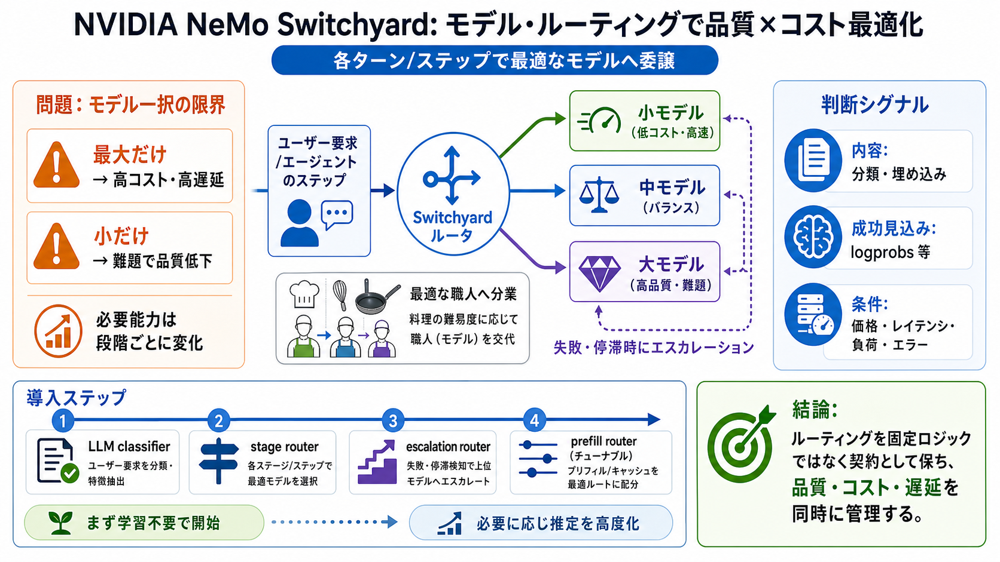

主役
NVIDIA NeMo Switchyard（オーケストレーション基盤）

NVIDIA NeMo Switchyard（オーケストレーション基盤）
各ターン/ステップで最適なモデルへ委譲（委任）する
高コスト・高遅延（過剰品質）
難題で品質低下（不足能力）
段階ごとに必要能力が変化
分類・簡易推論 → 小/中モデルで十分
深い推論・数学・高度コーディング → 大モデルへ
入力と利用可能文脈を見て委譲先を決める
provider-agnosticなSDKで契約を維持
共通APIで統合コストを下げる
分類/埋め込みなどの内容
logprobs等の推定手がかり
価格・レイテンシ・負荷・エラー等
判定で振り分け（学習不要）
ステップ状態で分岐（学習不要）
失敗/停滞時に上位へ（学習不要）
序盤（prefill）の情報で“当たりそうさ”を推定
最適なモデル/コストバランスへ誘導
LLM classifier / stage router / escalation router
prefill router：特徴から成功確率を推定
精度は高いがコストが重い
多くは小/中で処理
失敗/停滞を検知して引き上げ
運用・ガバナンス変更の改修コストを下げる
意味的なターゲットで扱い、ID対応を逃がす
シグナル設計 / ベンチ・指標 / 閾値（安全側の設計）
judgeコスト、ツール挙動変更による信号劣化、再評価コスト
Switchyardの狙い（品質/コスト/遅延の両立）
provider非依存SDK・サーバ層
ルータ種別（LLM classifier / stage / escalation / prefill）
シグナル設計と評価指標
judgeの隠れコスト/遅延
誤ルーティング時の失敗制御・再評価（A/B等）
No references found